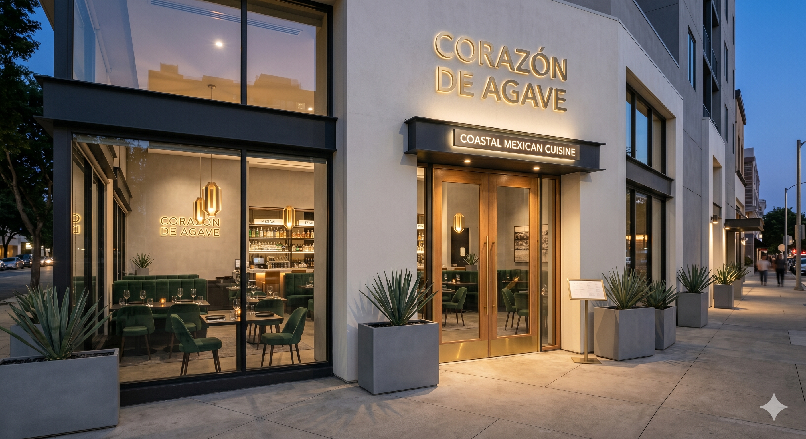
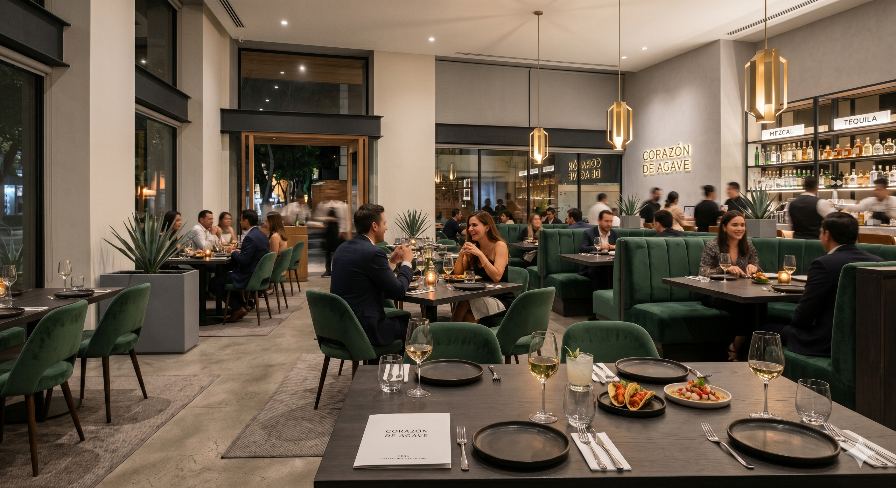
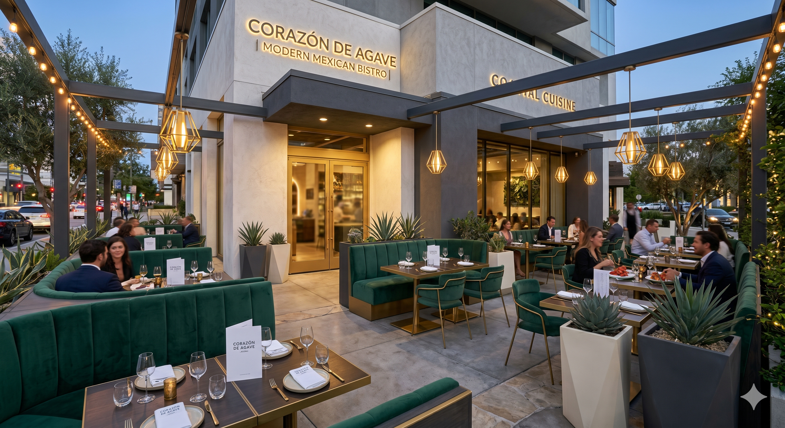
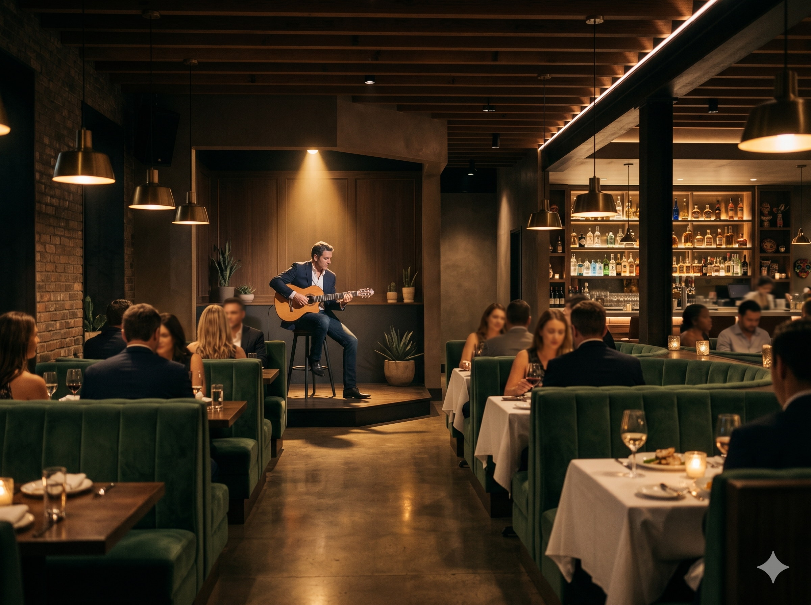
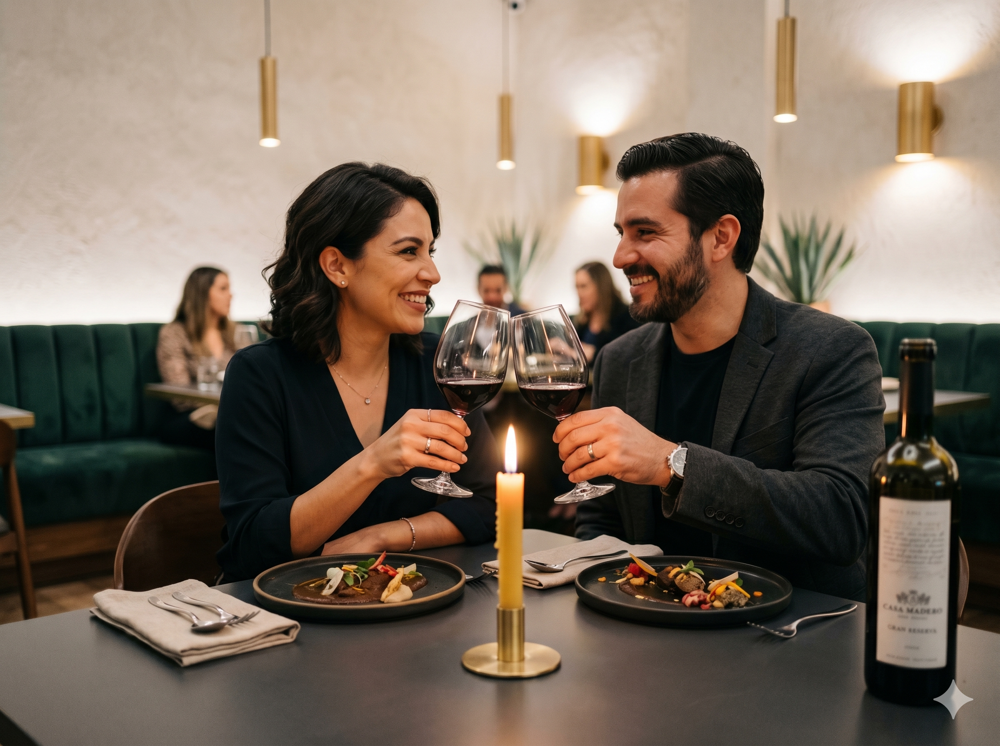
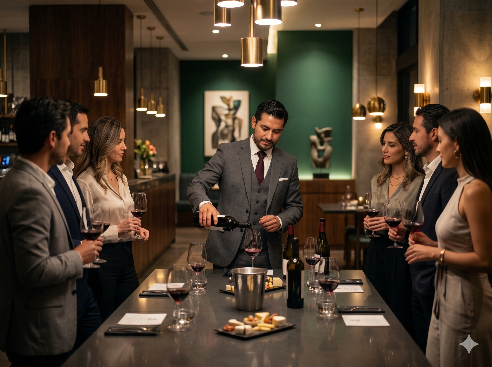

Nuestra elegante fachada, iluminada para recibirte en tus mejores noches.

Un salón principal diseñado con toques minimalistas y un ambiente cálido.

Nuestra terraza al aire libre, perfecta para disfrutar de un clima agradable y excelente compañía.
Nuestra exquisita Carne Asada, preparada con cortes premium y sazón tradicional.
Pesca del día con una costra crujiente y dorada, un toque costero inigualable.
Jugosas Fajitas Añejo, servidas en su punto exacto para deleitar tu paladar.

Noches inolvidables acompañadas de la mejor selección de música en vivo.

Cuidamos cada detalle para que tus fechas especiales sean verdaderamente mágicas.

Descubre nuevas notas y sabores en nuestras exclusivas catas guiadas por sommeliers.